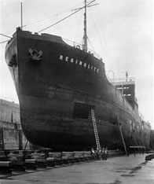

History
When British Columbia became a province within the Dominion of Canada in 1871, the Terms of the Union specified a graving dock be built at Lang Cove. The Colony's economy heavily relied on the commercial shipbuilding industry and it had to ensure it could attract business. At the time, the Drydock was large enough to accommodate every ship in the British Empire.
The federal department of Public Works assumed custodianship of the graving dock in 1887. As vessels grew in size, it was decided to build a larger drydock at Skinner's Cove in Esquimalt. Skinner's Cove was chosen because it was sheltered from wind and was situated on a solid rock basin – ideal for a drydock. The dock took six years to build and was the second largest in the world.

The Honourable David Anderson, former Minister of Environment with His Worship, Mayor Ray Rice of Esquimalt and Jack Gale of the Esquimalt Graving Dock at the rededication ceremony, July 1, 2002.
Articles
by Leah Prentice
- QE II Article (June 2002)
Photographs
Select a year: